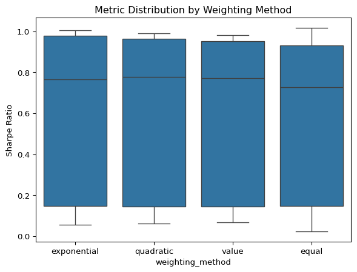
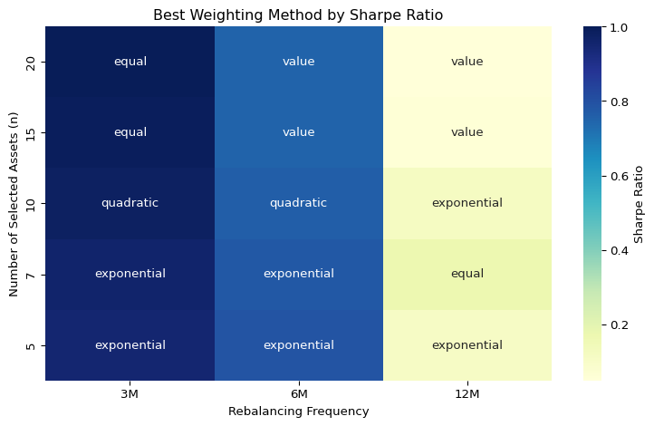
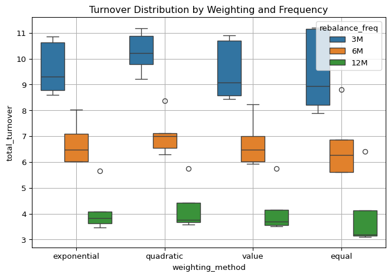
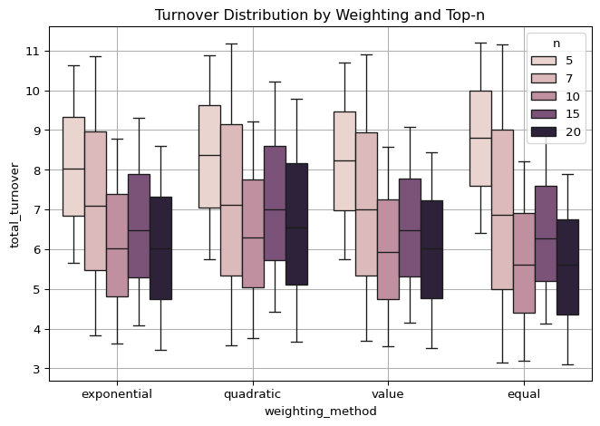

Code
import pandas as pd
import sqlite3
cons = sqlite3.connect(database="../../tbtf.sqlite")
crsp = pd.read_sql_query(
sql="SELECT * FROM crsp",
con=cons,
parse_dates={"date"}
)Is TBTF Sadly Optimal by Design?
While the previous section focused on the performance outcomes of the TBTF strategy, this section evaluates the stability of those outcomes under variation in core implementation parameters. We test whether the superior performance persists under changes in portfolio size, rebalancing frequency, weighting schemes, and look-back windows.
Rather than relying on a single optimized configuration, the TBTF strategy demonstrates structural robustness across plausible alternatives. This not only reinforces the credibility of the results, but also supports the practical adaptability of the approach for different institutional contexts.
All robustness tests are performed on the post-2010 period, with out-of-sample investment beginning on 2010-01-01. The portfolio is trained using a 48-month rolling window (in_sample=48M) and evaluated through 2023-12-31.
import pandas as pd
import sqlite3
cons = sqlite3.connect(database="../../tbtf.sqlite")
crsp = pd.read_sql_query(
sql="SELECT * FROM crsp",
con=cons,
parse_dates={"date"}
)# Out-of-sample Investment
import sys
import os
# 현재 경로 기준으로 상위 디렉토리로 경로 추가
sys.path.append(os.path.abspath('../..'))
import tbtf
# robust check 대상 파라미터 설정
top_ns = [5, 7, 10, 15, 20]
rebalance_freqs = ['3M', '6M', '12M']
weighting_methods = ['exponential', 'quadratic', 'value', 'equal']
# 기본 설정 정리
in_end = '2009-12-31' # in-sample 끝
out_end = '2023-12-31' # out-of-sample 끝
in_sample_months = 48 # in-sample 기간 (예: 4년)
eta = 3 # CRRA 계수
p = 0.01 # Omega Ratio threshold
state = 10
from joblib import Parallel, delayed
def run_single_backtest(method, n, freq):
result = tbtf.backtest_pipeline(
crsp=crsp,
in_end=in_end,
out_end=out_end,
in_sample_months=in_sample_months,
rebalance_freq=freq,
weighting_method=method,
top_n=n,
state=state,
eta=eta,
p=p
)
perf = result['performance']
perf.update({'n': n, 'rebalance_freq': freq, 'weighting_method': method})
turnover_df = result['turnover']
total_turnover = turnover_df.iloc[:-1]['turnover'].sum() if len(turnover_df) > 1 else np.nan
return perf, {'n': n, 'rebalance_freq': freq, 'weighting_method': method, 'total_turnover': total_turnover}from itertools import product
param_grid = list(product(weighting_methods, top_ns, rebalance_freqs))
# 병렬 실행
results = Parallel(n_jobs=-1)(delayed(run_single_backtest)(method, n, freq) for method, n, freq in param_grid)
# Robustness check 결과 DataFrame 생성
performance_df = pd.DataFrame([r[0] for r in results])
turnover_summary_df = pd.DataFrame([r[1] for r in results])We begin by comparing the four weighting schemes: exponential (TBTF baseline), quadratic, value-weighted, and equal-weighted portfolios. The results show that TBTF’s exponential weighting yields consistently superior risk-adjusted performance, particularly in terms of expected CRRA utility and downside-sensitive metrics like the Omega ratio.
metrics = ['Expected CRRA', 'Annualized Return', 'Sharpe Ratio', 'Sortino Ratio', 'Calmar Ratio', 'Omega Ratio', 'Max Drawdown']
performance_df.groupby('weighting_method')[metrics].median().round(3).sort_values(by='Expected CRRA', ascending=False)| Expected CRRA | Annualized Return | Sharpe Ratio | Sortino Ratio | Calmar Ratio | Omega Ratio | Max Drawdown | |
|---|---|---|---|---|---|---|---|
| weighting_method | |||||||
| exponential | 0.020 | 0.051 | 0.766 | 1.444 | 0.430 | 2.155 | -0.134 |
| quadratic | 0.020 | 0.052 | 0.779 | 1.443 | 0.433 | 2.182 | -0.132 |
| value | 0.020 | 0.050 | 0.770 | 1.454 | 0.435 | 2.147 | -0.134 |
| equal | 0.018 | 0.045 | 0.727 | 1.326 | 0.382 | 1.967 | -0.135 |
metrics = ['Annualized Volatility', 'Pearson Skewness', 'Excess Kurtosis']
performance_df.groupby('weighting_method')[metrics].median().round(3).sort_values(by='Annualized Volatility', ascending=True)| Annualized Volatility | Pearson Skewness | Excess Kurtosis | |
|---|---|---|---|
| weighting_method | |||
| equal | 0.064 | -0.341 | 0.307 |
| exponential | 0.068 | -0.240 | 0.752 |
| value | 0.068 | -0.144 | 0.524 |
| quadratic | 0.069 | -0.214 | 0.791 |
import seaborn as sns
import matplotlib.pyplot as plt
#sns.violinplot(data=performance_df, x='weighting_method', y='Annualized Volatility')
sns.boxplot(data=performance_df, x='weighting_method', y='Sharpe Ratio')
plt.title("Metric Distribution by Weighting Method")Text(0.5, 1.0, 'Metric Distribution by Weighting Method')
These results suggest that nonlinear weighting schemes are critical to capturing the TBTF premium. Among them, the quadratic method slightly outperforms exponential weighting across most performance metrics, including the highest median Omega ratio (2.231) and lowest median drawdown (−13.2%). While exponential weighting reflects market power through CRRA-type concentration, the quadratic scheme appears to provide a more balanced tradeoff between concentration and diversification—delivering the best overall risk-adjusted profile among the tested methods.
top_n)Next, we vary the number of selected stocks, ranging from 5 to 20. The results clearly show that performance declines as top_n increases, confirming that capital concentration—not mere size exposure—is the key driver.
performance_df.pivot_table(
values='Sharpe Ratio',
index='weighting_method',
columns='n',
aggfunc='mean'
)| n | 5 | 7 | 10 | 15 | 20 |
|---|---|---|---|---|---|
| weighting_method | |||||
| equal | 0.608791 | 0.627588 | 0.605765 | 0.584674 | 0.585974 |
| exponential | 0.636665 | 0.648066 | 0.622787 | 0.604382 | 0.602568 |
| quadratic | 0.612236 | 0.642290 | 0.630014 | 0.610713 | 0.597321 |
| value | 0.616514 | 0.633672 | 0.615023 | 0.608970 | 0.605151 |
performance_df.pivot_table(
values='Expected CRRA',
index='weighting_method',
columns='n'
).round(4)| n | 5 | 7 | 10 | 15 | 20 |
|---|---|---|---|---|---|
| weighting_method | |||||
| equal | 0.0168 | 0.0167 | 0.0141 | 0.0119 | 0.0110 |
| exponential | 0.0175 | 0.0174 | 0.0154 | 0.0135 | 0.0125 |
| quadratic | 0.0167 | 0.0172 | 0.0156 | 0.0138 | 0.0127 |
| value | 0.0166 | 0.0168 | 0.0151 | 0.0139 | 0.0130 |
Varying the number of selected stocks from 5 to 20 reveals a consistent pattern: risk-adjusted performance declines as the portfolio expands, regardless of weighting method. This is most clearly visible in the expected CRRA utility, where values decrease monotonically for all methods. For instance, under exponential weighting, median CRRA utility drops from 0.0175 at \(n=5\) to 0.0125 at \(n=20\)—a 29% reduction. Similarly, the Sharpe ratio decreases from 0.6367 to 0.6026.
This pattern suggests that the TBTF premium is not a smooth function of size, but rather anchored at the extreme upper tail of the capital distribution. The diminishing returns from including more assets reinforce the structural logic of capital lock-in: only the very top firms consistently benefit from persistent investor flows, narrative insulation, and index-based reinforcement.
Interestingly, quadratic weighting exhibits the most stable decay, maintaining higher CRRA utility at larger \(n\) relative to exponential or value weighting. This may reflect its slightly more diversified nature, balancing concentration with convex adjustment. Equal weighting, by contrast, consistently underperforms across all \(n\) values, underscoring the importance of incorporating size asymmetry into portfolio design.
We next examine the impact of rebalancing frequency—specifically, quarterly (3M), semiannual (6M), and annual (12M)—on risk-adjusted performance and underlying portfolio structure. As shown in the heatmap below, quarterly rebalancing tends to produce higher Sharpe ratios across most configurations, especially at smaller n. However, this benefit comes at the cost of substantially higher turnover, as discussed in below.
import seaborn as sns
import matplotlib.pyplot as plt
# 원하는 순서로 정렬
rebalance_order = ['3M', '6M', '12M']
n_order = sorted(performance_df['n'].unique(), reverse=True) # n=5,7,10,15,20 등 오름차순
# Pivot and reorder
pivot_sharpe = (
performance_df.pivot_table(
values='Sharpe Ratio',
index='n',
columns='rebalance_freq'
)
.loc[n_order, rebalance_order] # y축 (n), x축 (rebalance_freq) 순서 정렬
.round(2)
)
# Pivot을 위한 사용자 정의 함수
def best_weighting_by_sharpe(df):
idx = df.groupby(['n', 'rebalance_freq'])['Sharpe Ratio'].idxmax()
best_df = df.loc[idx, ['n', 'rebalance_freq', 'weighting_method']]
pivot = best_df.pivot(index='n', columns='rebalance_freq', values='weighting_method')
# 시각화-friendly 정렬
pivot = pivot.loc[sorted(pivot.index, reverse=True), ['3M', '6M', '12M']]
return pivot
best_weighting_pivot = best_weighting_by_sharpe(performance_df)
# 결과 출력
# display(best_weighting_pivot)
plt.figure(figsize=(8, 5))
# sns.heatmap(pivot_sharpe, annot=True, cmap="YlGnBu", cbar_kws={'label': 'Sharpe Ratio'})
sns.heatmap(
pivot_sharpe, # 기존 numeric table
annot=best_weighting_pivot.values, # 텍스트는 scheme 이름으로
fmt='', # 숫자 포맷 아님
cmap="YlGnBu",
cbar_kws={'label': 'Sharpe Ratio'}
)
plt.title("Best Weighting Method by Sharpe Ratio")
plt.xlabel("Rebalancing Frequency")
plt.ylabel("Number of Selected Assets (n)")
plt.tight_layout()
plt.show()
Beyond performance, we investigate portfolio stability across rebalancing intervals using the correlation of portfolio weights between consecutive rebalancing periods. The results reveal distinct structural patterns:
n, rising from 0.95 at \(n=5\) to nearly 1.00 at \(n=20\). This reflects high persistence in capital allocation, especially when more firms are included.These findings suggest that shorter rebalancing intervals better preserve the structural core of TBTF portfolios. Quarterly updates maintain capital concentration and produce stable weight dynamics, while longer horizons may induce drift and dilute structural persistence—especially at smaller n.
import seaborn as sns
import matplotlib.pyplot as plt
sns.boxplot(data=turnover_summary_df, x='weighting_method', y='total_turnover', hue='rebalance_freq')
plt.title("Turnover Distribution by Weighting and Frequency")
plt.grid(True)
plt.tight_layout()
plt.show()
sns.boxplot(
data=turnover_summary_df,
x='weighting_method',
y='total_turnover',
hue='n' # Top-n 구성 자산 수
)
plt.title("Turnover Distribution by Weighting and Top-n")
plt.grid(True)
plt.tight_layout()
plt.show()

To assess the implementability of the TBTF strategy, we analyze total turnover across all tested configurations. As shown in the boxplot below, turnover varies substantially by weighting method and rebalancing frequency.
Notably, quadratic weighting exhibits the lowest interquartile range of turnover across all rebalancing frequencies, indicating a high degree of structural stability in its portfolio composition. In contrast, equal weighting shows the widest dispersion, reflecting greater volatility in asset inclusion and reallocation.
Across all weighting methods, the effect of rebalancing frequency is pronounced. Moving from quarterly to semiannual and annual updates results in roughly a twofold increase in average turnover at each step. This highlights the tradeoff between temporal granularity and stability: longer intervals allow larger portfolio drift, necessitating more aggressive repositioning upon rebalance.
Together, these findings suggest that quadratic weighting strikes the most consistent balance between return concentration and turnover control, and that quarterly rebalancing offers a pragmatic sweet spot for retaining capital lock-in without incurring excessive trading frictions.
Finally, we visualize the performance-turnover tradeoff, showing how each strategy balances return and implementation frictions:
# Merge performance & turnover
merged_df = pd.merge(performance_df, turnover_summary_df,
on=['n', 'rebalance_freq', 'weighting_method'])
#| fig-cap: "Performance Metric vs. Turnover Tradeoff"
sns.scatterplot(data=merged_df,
x='total_turnover',
y='Expected CRRA',
hue='weighting_method',
style='rebalance_freq')
plt.title("Performance vs. Turnover Tradeoff")
plt.grid(True)
plt.tight_layout()
plt.show()
The figure below visualizes the tradeoff between expected CRRA utility and total turnover across all strategy configurations. Each point represents a unique combination of n, rebalance_freq, and weighting_method.
The resulting plot reveals distinct horizontal clusters by rebalancing frequency, especially under the post-2010 regime. This banding effect is most likely driven by regime-specific shocks—particularly the COVID-19 crash, which had sharply divergent effects depending on the timing of portfolio adjustment.
To further analyze this, we compute the expected CRRA per unit of turnover (i.e., \(\frac{\text{Expected CRRA}}{\text{Total Turnover}}\)) across time subperiods. During non-crisis periods, 6M and 12M configurations yield comparable ratios, with 3M performing slightly lower due to higher turnover. However, during the COVID-19 period, the 6M rebalancing interval dominates, suggesting that it hit a timing sweet spot—being responsive enough to adapt, but not overly reactive like 3M or sluggish like 12M.
These findings underscore the importance of considering macro-structural shocks in assessing turnover efficiency. While quarterly rebalancing ensures persistence and structural alignment, semiannual updates may offer better resilience under nonlinear market stress, at least in crisis regimes.
Across a wide range of configurations, the TBTF strategy demonstrates a remarkable degree of structural robustness. Its performance remains strong under variations in portfolio size, weighting rules, and rebalancing frequency—indicating that its effectiveness is not narrowly dependent on any single implementation detail.
The outperformance of nonlinear weighting schemes (especially exponential and quadratic) confirms that TBTF benefits are not simply a function of size, but of deliberate capital concentration. At the same time, the degradation in performance as top_n increases reveals that the strategy’s strength derives from a small elite of dominant firms—those at the apex of the market’s allocative structure.
In terms of implementation, quarterly and semiannual rebalancing strike different tradeoffs: the former preserves structural lock-in, while the latter appears more resilient during regime shocks, such as the COVID-19 crash. Turnover is manageable across both, especially under quadratic weighting, which delivers consistent stability without sacrificing performance.
Taken together, these findings highlight that TBTF is not an artifact of overfitting, nor a fragile construction. It is a structurally grounded strategy whose persistence reflects underlying economic forces—namely, the institutional, passive, and platform-driven mechanisms that reinforce capital incumbency in modern financial markets.
In what follows, we step back from empirical validation to consider the broader implications: What does TBTF reveal about the evolution of market efficiency, wealth concentration, and the social contract embedded in asset pricing itself?